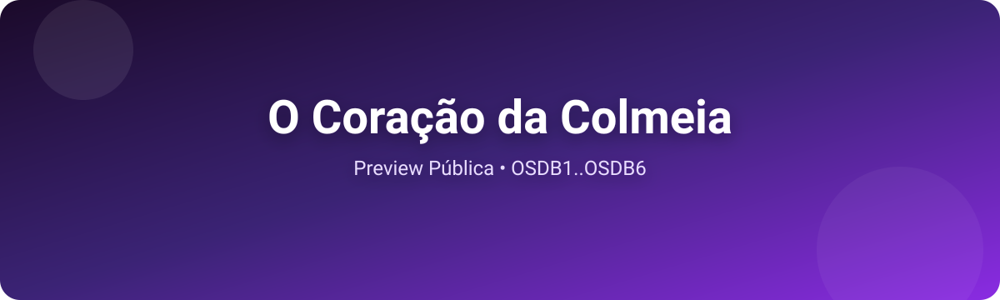

📚 O Coração da Colmeia
Uma jornada entre duas realidades, onde Miraferro e Krawzer se encontram

📖 Leitor Digital
Leitura paginada com índice lateral, tema claro/escuro e navegação por páginas.
📚 Arquivos (opcional)
Se preferir, você pode abrir os arquivos em texto puro:
ℹ️ Sobre
Duas realidades: Ironsight (urbano distópico) e Krawzer (magia elemental). A travessia ecoa feridas, objetos e memórias. Gael é nosso fio condutor.
Veja o repositório para detalhes e contribuição.